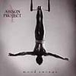

| Artist: | Addison Project |
| Title: | Mood Swings |
| Label: | Unicorn Records uncr-5008 |
| Length(s): | 47 minutes |
| Year(s) of release: | 2003 |
| Month of review: | [10/2003] |
| 1) | Sleepwalking | 6.10 |
| 2) | The Muffin | 3.41 |
| 3) | Montee De Lait | 4.28 |
| 4) | Mood Swings | 6.15 |
| 5) | Le Grand-be (wrath Of Chateaubriand) | 4.57 |
| 6) | Mceuet | 3.34 |
| 7) | After All (demon's Dance) | 4.31 |
| 8) | 10h10 | 5.01 |
| 9) | Controlled Freedom | 8.12 |
Although the keys in The Muffin smooth things over a bit, this track is far more jazzy than its predecessor, which is made especially clear when the guitar sets in. This track seems to be the preamble to sink off into freaky jazz land, since Montee De Lait is pretty abstract, freaky and very much jazzy.
Mood Swings starts off with a melancholic sounding synth (or electric) gypsy violin. This is later augmented by piano, just mellow enough to refrain from prolonging our stay in freakyland. The slow supporting synth is almost hypnotic. Unfortunately the track does not offer enough tension or versatility to bridge its length.
Le Grand-be (Wrath of Chateaubriand) leans on just-a-little-too-fast-guitar and a lumberjack drum sound, later joined by a sax-variant and the latest stages of its death throes (possible caused by by bad chateubriand). Later the track becomes a bit less neurotic and more listenable.
Mceuet starts out pretty friendly, but sees its second half dominated by honky sax. Guess there's more jazz than music in this one. Things don't improve with After All (Demon's Dance), being a lot of wind and not enough substance, nor with 10h10, for which the same goes, although there's a lot of neuroviolin as well and some decent drumming in between, really.
The use of sop sax in Controlled Freedom creates a bit of a Kenny G feel. As the track progresses the sax is killed off and it becomes more atmospheric with soft synths, echoing samples and other cavey sounds. A rather strong closing for an album that leaves me indifferent at best most of the time.